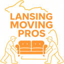

Growth partner invested in your success.
Silver Bullet is a performance-based marketing firm. We take a share of the revenue or profit we generate, so the bigger part of what we earn depends on what you earn. That is the whole arrangement — our upside only arrives after yours does.
A glimpse at our work.
The numbers behind it, and how each one was measured: NSP Plumbing, +50% revenue in two months, Vitality Mechanical, +25% in two months, and Mantis Moving & Storage, ~$60k booked from ~$2,000 of ad spend.





Companies who trust us.
The names change, the arrangement does not. Every one of them can measure what we do, which is the only condition this model needs.

Proficient in.
The platforms we run every day.


Industries we already know.
No learning curve on your budget. In these six we already know where the leads come from, what they cost, and where the money leaks.
-

Plumbing
Demand arrives as an emergency and goes to whoever picks up first, so the money is lost in the gap between the click and the booked job. We run the emergency terms separately from the planned work, route the calls to a tracked line, and feed booked jobs back into the ad platforms so bidding optimizes on work won rather than forms filled. Service, repair, drains, water heaters NSP Plumbing case study -

HVAC
Demand swings with the weather and thins out in the shoulder months, so spend that pays for itself in July is dead weight in October. We move budget between replacement and repair as the season turns, and put a maintenance-plan offer behind the quiet months so the account still earns when nobody is sweating. Repair, replacement, maintenance plans Vitality Mechanical case study -

Moving and storage
Violently seasonal, and the lead you just paid for was sold to four other movers at the same moment. We build the quote request around the survey rather than the price, and follow up on a schedule that assumes the mover is being shopped, so the second conversation is ours instead of the cheapest bid. Local, long distance, containers, storage Mantis Moving case study -
Roofing
Storm work and planned replacement look identical in the ad account, so budget follows whichever is cheaper that week instead of whichever is worth having. We split storm response from planned replacement into separate campaigns with their own budgets and landing pages, so one stops quietly eating the other when the weather turns. Repair, replacement, storm response -
Restoration
The job is bought in the first hour of a flood or a fire, on a phone, usually by someone who has never needed the service before and has no idea who to call. We hold the emergency terms at the hours they actually convert, put the phone number above everything else on the page, and measure to the dispatched job rather than the form fill. Water, fire, mold -
Insurance
Carriers outbid every independent agency on the obvious terms, and the clicks cheap enough to win are shopping on price and nothing else. We go after the coverage situations a call center handles badly, bundled, high-value and hard-to-place, and build the quote form to qualify on that instead of chasing the cheapest click. Independent and boutique agencies
The six above are where we know the demand best, but the arrangement is not limited to them. If you sell a service direct to consumers and you are under $15M a year, it works the same way — tell us what you are trying to grow.
We built the system.
Now we bet it on you.
Tell us what you're trying to grow.
We'll look at your numbers and tell you honestly whether a performance deal makes sense. If it doesn't, we'll say so.
-
“I’ll be straight with you: the commercial side wasn’t worth anything at the start, and I knew it. Six weeks in I was ready to call it off. If the full bill had been due every month regardless, I’d have pulled the plug before it ever turned — and that’s not me talking tough, I’ve done exactly that to two other agencies. The only reason I let it run was that it wasn’t costing me anything it hadn’t already made. Somewhere around week eight the commercial calls started, and they were the right kind — property managers, buildings that call you back, not one-off drain clogs at eleven at night. We’re up about fifty percent and I’m not the one chasing it anymore. I still think most marketing companies are full of it. These ones just happened not to be.”
Owner, NSP Plumbing +50% revenue growth in two months -
“For years we were completely at the mercy of Local Services Ads. Google would change something on their end, or somebody would outbid us, and the phone would go quiet for a week — and there was nothing I could do about it except wait it out. The paid search account they built is the first channel that’s actually mine. I can see what a booked move costs me to get, I know roughly what’s coming next week, and when I want more of it I turn it up. Nobody tells you that the predictability is the part worth paying for. I thought I was buying leads. I was buying the ability to plan.”
Dana, owner, Mantis Moving & Storage ~$60k booked from ~$2,000 of attributable ad spend -
“We had never really done marketing. Thirty years of word of mouth and a website somebody’s nephew built that just sat there doing nothing. This was the first time we deliberately spent money to go and get work, and I’ll admit I dragged my feet on it for a long while. The new site is the whole difference. Same trucks, same guys, same phone number — people land on it now and they actually call. The only thing I’d change is the ten years I spent assuming referrals would keep being enough.”
Robert Ainsley, president, Vitality Mechanical +25% revenue growth in two months -
“We doubled revenue in seven months with the same number of people, which is not what I expected to happen. I came in asking for more traffic. What I got was somebody sitting me down and telling me which products were worth advertising and which ones to stop running entirely — two of what I thought were my best sellers were losing money once you counted the ad spend against them. Nobody in four years had shown me that. The growth is nice. Knowing which half of it to feed is the part I’d pay for again.”
Founder, Galway 2x revenue in seven months